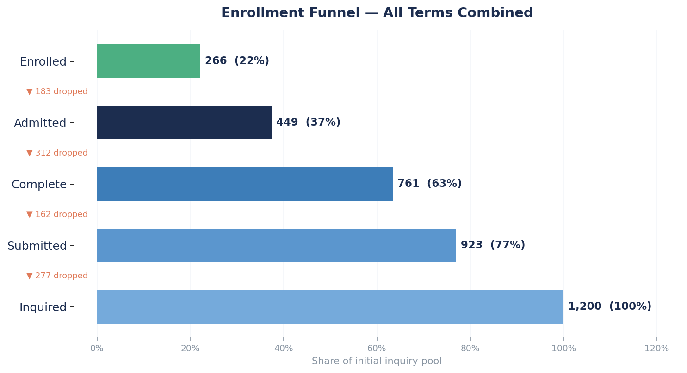
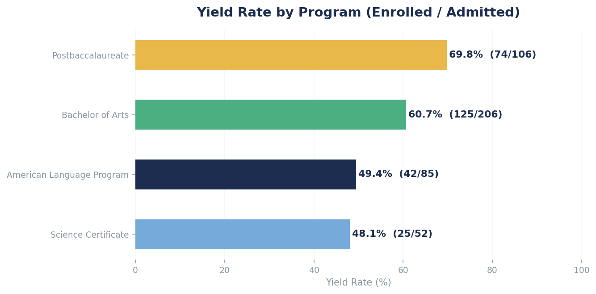
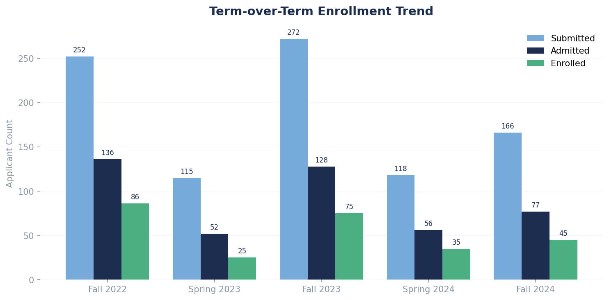
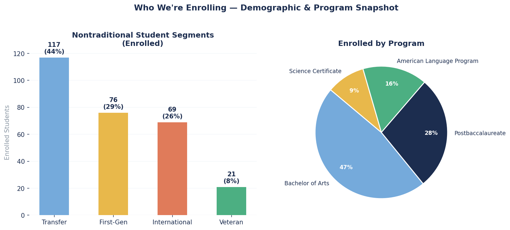

Stage-by-stage conversion across all terms. The largest drop-off occurs between Inquiry → Submission (277 lost), suggesting an opportunity to improve early engagement and application support for nontraditional students.

Key finding: The Inquiry → Submission drop (23%) is the funnel's biggest leak. For GS's nontraditional population — first-gen, working adults, veterans — this may reflect application complexity or lack of advisor touchpoints early in the process. A targeted intervention here could meaningfully move the yield needle.
Postbaccalaureate leads in yield (70%); Science Certificate trails at 52%. Fall terms consistently outperform Spring in raw enrollment volume.

Science Certificate at 52% — nearly 20 pts below Postbaccalaureate. Worth investigating whether admitted students are choosing competing programs or deferring enrollment due to financial aid gaps.

Fall 2024 shows the highest submission volume, but admitted-to-enrolled conversion is flat vs. Fall 2023 — suggesting the funnel top is growing but yield work remains ongoing.
GS's mission is access. These breakdowns track whether enrollment outcomes reflect that — essential for reporting to deans and external stakeholders.

42% of enrolled students are transfer students — the single largest segment. First-gen representation sits at 32%, consistent with GS's mission. Veteran enrollment (8%) could be a growth area worth targeting with dedicated outreach.
One of three stored procedures built for this project. get_funnel_drop_off()
computes stage-to-stage attrition for any term — designed to feed Crystal Reports,
ad-hoc Excel exports, or Slate-connected dashboards.
-- Returns stage-to-stage drop-off for a given term code -- Usage: SELECT * FROM get_funnel_drop_off('Fall2024'); CREATE OR REPLACE FUNCTION get_funnel_drop_off(p_term_code VARCHAR) RETURNS TABLE ( stage_from TEXT, stage_to TEXT, count_from BIGINT, count_to BIGINT, drop_off_count BIGINT, drop_off_pct NUMERIC ) LANGUAGE plpgsql AS $$ DECLARE v_term_id INT; BEGIN SELECT term_id INTO v_term_id FROM terms WHERE term_code = p_term_code; IF v_term_id IS NULL THEN RAISE EXCEPTION 'Term code % not found', p_term_code; END IF; RETURN QUERY WITH stage_counts AS ( SELECT fe.stage, COUNT(DISTINCT fe.application_id) AS cnt, CASE fe.stage WHEN 'Inquiry' THEN 1 WHEN 'Application Submitted' THEN 3 WHEN 'Admitted' THEN 7 WHEN 'Enrolled' THEN 8 END AS stage_order FROM funnel_events fe JOIN applications a ON fe.application_id = a.application_id WHERE a.term_id = v_term_id GROUP BY fe.stage ), ranked AS ( SELECT stage, cnt, stage_order, LEAD(stage) OVER (ORDER BY stage_order) AS next_stage, LEAD(cnt) OVER (ORDER BY stage_order) AS next_cnt FROM stage_counts ) SELECT r.stage::TEXT, r.next_stage::TEXT, r.cnt, r.next_cnt, (r.cnt - r.next_cnt), ROUND((r.cnt - r.next_cnt) * 100.0 / NULLIF(r.cnt, 0), 2) FROM ranked r WHERE r.next_stage IS NOT NULL ORDER BY r.stage_order; END; $$;
Full schema (normalized, indexed), two additional stored procedures
(get_term_enrollment_report, flag_stale_applications),
and three reporting views are in /sql/ on the GitHub repo.